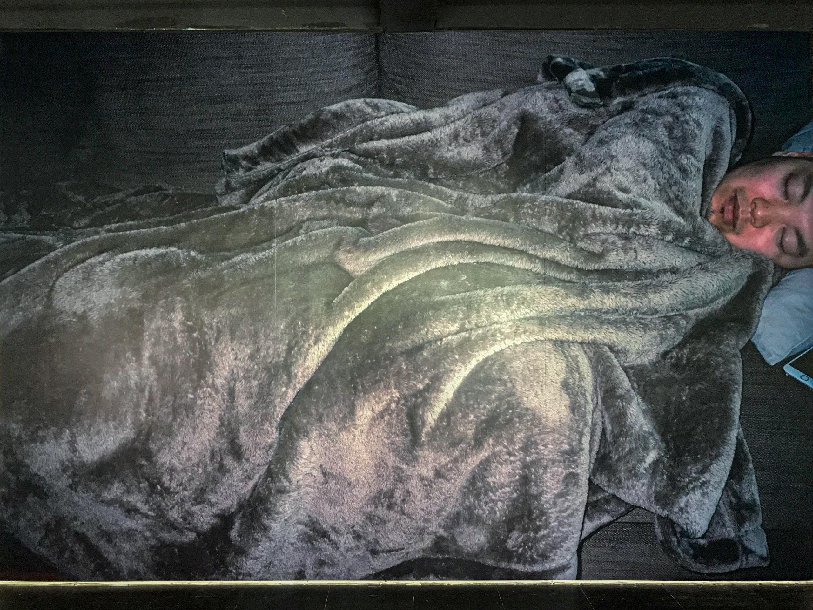

나쁜 관객
<
이정, 안녕.
지난 겨울 이후로 오랜만이네.
지금 기말고사 기간이지?
나는 시험 2개랑 실기 수업 2개, 이번주 월요일에 있던 발표까지 끝냈어. 그 덕에 한 숨 돌리는 중. 흐아,
시험 준비 하고 (열심히 하진 않음) 작업하면서 내가 마감일까지 이걸 끝낼 수 있을까? 어떡하지? 어떡해? 발 동동 상태였는데
제일 중요한 작업을 열심히 했으니까 교양 공부 안한 건 퉁치자. 포기~ 의 마음으로 영겁의 시간을 보내었음.
이번 메일에서는 지난번에 말했던대로 ⟪Bench Side⟫에 대한 리뷰를 전하려 해.
네가 왜 ⟪Bench Side⟫ 리뷰를 받겠다고 말했는지는 사실 알다가도 모르겠는데 이 알다가도 모르겠고, 반갑고도 미적지근한 감정은 내가 ⟪Bench Side⟫와 본 전시를 기획한 QF를 볼 때 갖는 마음과 비슷해.
'기획 유닛으로 따로 또 같이 활동하며, 에로티시즘, 여성주의, 퀴어성을 탐구'한다고 말하는 두 남자: 권시우 평론가와 하상현 기획자.
QF의 출범은 여러모로 나에게 무언가를 신경 쓰게 했는데 이 점에 대해서는 전시를 리뷰하며 말해볼 수 있겠다.


⟪Bench Side⟫에는 대개 문자 언어나 도상처럼 의미적으로 단번에 읽히는 요소를 직접적으로 표현하기보다 구체적인 정황/맥락을 어느 정도 소거한, 조형성이 강조된 작품들이 주를 이루었어.[1]
특히 최고은 작가와 김민훈 작가의 작업이 그러했는데, 미술에서의 모국어가 사진인 나는 그 조각 작품들을 눈에 익히기 위해 오랜 시간을 쓸 수 밖에 없었어. 모르겠으면 일단 보는 수 밖에 없으니까.
근데 아직도 잘 모르겠음. 😸
반면 안초롱 작가의 <the Sleeping Man 2017> 같은 경우는 직관적으로 훅 들어왔고, 전시를 처음 봤을 때 이 전시는 안초롱에 대해서만 말할 수 있을 것 같다고 생각할 정도로 인상이 분명했어.
그러니까 The Sleeping Man 잠자는 남자에 대해 말하는 것으로부터 출발해볼게.

작품이 되게 컸어. 300 x 446cm로 d/p의 한쪽 벽면을 위아래로 가득 채웠을 만큼의 크기였음.
잠자고 있는 남자의 모습을 바로 앞에서 찍은 스냅 사진을 300 x 446cm 크기로 봤을 때 느껴지는 과도한 사적임 같은 게 있었고,
담요의 검푸르고 복슬한 질감이나 눈두덩이 부분에서 크롭한 선택이 이 사진을 찍은 사람의 시선에 내가 너무나도 쉽게 올라타게 만들더라.
위 <the Sleeping Man 2017>이 붙여진 벽에는 조명을 아예 안 비춰놨던데 그 어둠도 몰입에 한 몫 했고.
사진에 담긴 구체적인 정황으로 내 장소 감각이 흡수되고 있는 걸 인지하지 못한 상태로 계속해서 보게되는 작품이었어.
리플렛을 보니 촬영된 남자가 작가의 남편이라고 하더라.
잠자는 남편의 몸을 보면서 "나를 사랑하는지. 왜 나와 살고 있는지."와 같은 생각에 잠긴다고 하는데 그 문장에 담긴 불안의 정서가 작품이랑 잘 붙었어.
결혼해도 이런 불안은 계속 드는 건가? 어쩔 수 없는 건가? 싶으면서 동시에 그 '알 수 없음', 아직 알지 못하는 남자의 몸 이라는 전제가 본 전시 기획의 출발 지점이라는 생각이 들었음.
페미니즘 이전의 세계에서 남자의 시선과 남자 몸의 규격 같은 기준들은 어떤 의미에서 표준: 일반적인 것으로 기능했으니까.
그동안 의심받지 않았던 남자의 몸을 페미니즘 이후 퀴어적인 관점으로 다시 들여다보고자 했던 게 이번 QF의 야심이 아니었을까 싶다.
조형 언어가 부각된 작품들을 대거 선별해왔음에도 전시장에 입장하면 바로 보이는 커다란 벽 전체를 사진 작품들에 맡긴 선택이 지금 와서 생각해보면
그런 목적, 출발점, 인식론점 영도를 관객으로 하여금 계속해서 리마인드 시켰던 것 같아.
왼쪽 벽.
위 작품들은 이승일 작가의 <Fig 1>, <Fig 3>, <Fig 5>야.
이 평면 작품들이 안초롱의 사진과 더불어서 본 전시에 출품된 여러 작품들 중 '보기'보다 '읽기'의 방식으로 감상하기 편했던 작품인데
지금 막 이 작품에 대한 감상이랑 설명을 쓰려다가 갑자기 이승일과 안초롱이 이 전시에 포함됐어야 했나? 하는 의문이 든다.
⟪Bench Side⟫로 진짜 구현하고 싶었던 감각은 최고은, 김민훈, 윤정의의 작품들을 통한 것에 가깝고 위 둘은 그 조형 언어를 뒷받침하는 맥락 - 보조 텍스트로써 작동했던 게 아닌가? 싶어.
어.. 일단 Fig 이야기는 마저 할게.


고대 그리스 혹은 르네상스 시기 서양 남자들의 몸을 그린 흑백 도면 위를 얇은 매트 보드가 덮고 있어.
매트 보드의 중앙은 (1) 백조나 갈매기, 타조 등의 조류 형태 (2) 인간 형태 (3) (1)과 (2)가 합쳐진 조류-인간 & 인간-조류 모양으로 잘려져 있지.
그 구멍을 통해 서양 남자들의 흠씬 벌크업된 몸을 관람할 수 있었던 작업이었어.
서양 남자들은 대부분 복근이나 팔근육, 자지를 보유하고 있었고 그 부위들을 은근하게 드러내거나 굳이 가리지 않는 옷차림을 하고 있었기 때문에
매끈한 남자의 몸에 관심 있는 사람들은 뚫어져라 보고 있을 수 있었음.
대부분의 경우 남자들이 그림에 한 명 이상씩 등장했기 때문인지 나는 이런 포인트들이 게이 섹슈얼한 것이라고 이해했어.
매트 보드는 이러한 포인트들을 절묘하게 가리거나 보여주는데, 이 보여주기를 통해 관객으로 하여금 꼴리기를 기대한 건 아닌 것 같아.
옷입히기 게임처럼 남자들의 몸을 어떻게 보여줄지 작가인 내가 이렇게나 다양하게 갖고 논다는 식의 유희하는 모습이 더 연상됐음.
마치 내 규칙은 내가 직접 짤 수 있는 퍼즐 게임을 하는 것처럼.
작품의 긴면이 50.5cm로 그렇게 크지 않았고 11 작품이나 있었거든.
서양 남자 몸 노출을 베이스로 삼고, 그들의 몸을 보여주는 구멍이자 관점인 새와 인간의 몸이 어떻게 서로 합쳐지고 transition이 다양하게 반복-변주되는지 그 시퀀스를 보는 게 감상점이었다고 생각해.
과거의 서양 남성 몸들을 제물 삼아 퀴어적인 시선을 행사했다고도 여겨 볼 수 있을 듯.
이렇게 말을 많이 할 수 있다는 것도 도상Icon을 적극적으로 사용하는 작업이라 가능한 것 같아.

어.. 그래. 내가 이 전시에서 느낀 문제가 뭐였는지 글 쓰면서 다시 생각해봤는데, 전시에 출품된 작품 자체가 문제는 아니거든?
근데 이 전시를 통해서 나와 같은 관객들이 기대했던 것 = 기획자들이 기대하게 만들었던 것과, 본 전시는 분명히 같은 부분이 있지만서도 달라.
내가 이 전시에 기대했던 점은 '퀴어Queer'야.
퀴어성, 퀴어 미술, 퀴어 전시.
그 이유는 QF가 출범했을 때,
그 일원인 하상현 작가가 작가 활동을 잠시 마무리하고 기획자로 활동한다고 선언했을 때,
또 전시 ⟪Bench Side⟫의 소개 글과
기획의 글을 읽어봤을 때
이제 막 출범한 그들에 대해 품게되는 인상 때문인데, QF가 했던 말들과 자기 소개를 모두 팔로우한 사람이라면 누구라도 ⟪Bench Side⟫를 보러 가면서 퀴어(성)에 대한, 혹은 퀴어(성)을 통한 무언가를 기대하지 않았을까?
위 기대를 다시 기억한 채로 ⟪Bench Side⟫에서의 전시 경험을 곱씹어봤을 때,
⟪Bench Side⟫는 소수자의 자리인 벤치와 그 시점에서 바라본 필드: 남자의 몸을 다루는 데에는 성공했지만 퀴어(성)을 다뤘다고 말하기에는 애매했어.
가장 처음 기술한 안초롱의 <the Sleeping Man 2017>이 보여줬던, 결혼이라는 가부장 질서 아래 여성의 자리에서 바라 본 남편의 몸,
그 불안 섞인 시선은 소수자의 자리인 벤치에서 바라본 남자의 몸은 맞지만 퀴어적인 모멘트는 아니었거든.
어떤 의미에서 위협적이기도 했던 그 시선은 굳이 따지자면 페미니즘적인 것에 가깝지.
반면 이승일의 <Fig>는 개념으로서의 Bench Side에 훌륭하게 부합하면서도 퀴어적인 모멘트를 충분히 느끼게 해줬던 것 같아.
최고은의 경우 이승일과 같이 Bench Side와 퀴어(성)이라는 두가지 미션을 성공적으로 클리어한 케이스라고 생각해. (미션이라고 하니까 갑자기 무슨 퀘스트를 달성해야되는 게임 같네. ^^;)

남자의 몸이자 수많은 건물들의 지지체, 남성중심적인 역사에 대한 은유로서 파이프라는 재료를 생각해봤을 때
그걸 가르고 - 벌리고 - 끼워넣고 - 교차시키는 형태가 일탈적인 것이나 유희적인 것을 넘어 섹시하고 퀴어적인 것으로 볼 수 있다는 여론에 나도 동의!
다만 정말 애매했던 경우가 윤정의와 김민훈이었는데, 그들의 작품에서 퀴어져 가는 선택[2] 혹은 또다른 필드로서의 벤치[3]를 감각할 수 있는 힌트를 발견하기는 했거든?
근데 이게 나로서는 정말 애매했다고 밖에 말할 수가 없다.
윤정의의 <무제(모델)>이야. 153cm 높이의 조각 작품으로 남자의 몸처럼 생겼으며 군데군데 잘려진 단면들이 보이는 게 특징임. 내가 이 작품을 보고 보고 보다가 그래도 모르겠으니까 또 계속 보면서 발견한 것은
이 틈새거든? 보통 잘려진 단면이 보인다고 해도 위 아래 블럭이 딱 들어맞게 만들어지지, 이렇게 가운데를 통해 건넛 공간이 보이는 걸 예상하진 않잖아? 그런데 이 점을 앞서 언급한 두가지 미션과 결부시킬 수 있는가? 했을 때 나는 잘 모르겠어. 남자의 몸 이미지를 블록 이미지에 맞춰 나눠 상정하고 점토로 빚기 시작해, 그걸 가마에 구운 후 전시장까지 운반해서, 쌓아 완성했다는 점이나, 저 틈새를 통해 건너편을 볼 수 있다는 점, 조각의 일부처럼 보이는 <타월>을
바닥에 널브러뜨린 선택까지. 하.. 지금 이 리뷰를 쓰면서 작품 캡션을 확인해봐야 하니까 모니터와 리플렛을 계속 번갈아 보고 있거든? 근데 이러다보면 또 설득되는 기분이 든다?
리플렛과 기획의 글을 읽다보면 그 안에 담긴 주장과 실제 작품에서 받아들인 감각 정보들이 어쩔 수 없이 경합을 일으키게 되는데, 작품의 주장이 아주 강하지 않은 경우 감상 경험이 기획의 글에 쓰여진 내용대로 굴절된단 말이야.
바로 이 점이 내가 리뷰를 쓰면서도 본 전시가 애매했다, 헷갈린다라고 반복해서 말하는 이유 같아.
분명 나의 허기짐: 당사자 중심이지 않은 퀴어(성)과 퀴어 미술이란 무엇인가? 라는 질문은 그대로 있고, 이에 부응하는 감각 경험은 전시에서 분명히 모자르게 했는데 기획의 글과 작품 설명 글로 나 자신의 허기를 속이게 돼. 마치 요즘 많이 나오는 zero 칼로리 전시를 섭취한 것처럼.
전시가 Bench Side라는 개념을 시각적으로 구현하는 데까지는 성공했는데, 그 아웃사이더의 시점이 그 자체로 퀴어성과 결부되는 건 아니잖아?
소수자라고 해서 모두 퀴어는 아니니까. 근데 나는 여기 퀴어 전시 보러 왔고, 기획의 글에도 퀴어 이야기 하고 있고,
<타월>이라는 작품을 작품 제목, 작품 설명과 함께 보면 윤정의의 몸 조각을 벌거 벗은 채 땀 흘리는 남자로 생각하게 되고, 이러면 또 에로티시즘! 퀴어! 말이 되지 않나? 자기 의심을 하게 돼.
이걸 텍스트로 소개하는 방식으로 주장하지 않았어도 시각적으로 충분히 구현했다면 나는 곧장 설득당할 준비가 되어 있는데 말이야.
김민훈의 작업을 전시장 입구 바로 오른쪽에 딱 붙여 배치한 것도 나는 분명히 전시 언어를 선택한 것이라고 느껴지기는 하거든?
근데 그 선택을 통해 하려고 했던 게 무엇인지는 도통 모르겠다. 이러한 선택과 틈새들이 곳곳에 힌트처럼 보이긴 하는데 그 인상이 분명하지는 않았어.
여성주의와 퀴어성에 관심이 많다고 본인을 소개한 남성 미술인들이 내심 반갑고 궁금해서 기대했던만큼 아쉬운 마음도 큰 것 같다.
뭔가 씁쓸해지네.. 그래도 남웅, 리타, 양효실 비평가가 참여하는 도록이 나온다고 하니까 그거라도 봐야지...
그건 zero 칼로리가 아니고 퀴어(성) 함량이 높았으면 좋겠다.
재훈 드림.
[1] 남웅, 「쾌락의 열병, 커뮤니티라는 그을음을 따라 - 퀴어 미술 산보하기」, 2023년 6월 9일, https://lgbtpride.tistory.com/m/1828
[2] 권시우, 「이쪽과 저쪽과 그 사이의 우리로부터」, 2023 중 '다만 또 퀴어 멀어져 간다.' 에서 영감 받음.
[3] 권시우, 「전시 후기: 사라진 필드의 선수들」, 2023년 6월 12일, https://blog.naver.com/shakingjoe/223126229845
답장!
이정
2023.06.27